최대한 채소를 많이 먹으려고 노력하고 있어요!
건강한 식단 하면 예전에는 중년·노년층을 대상으로 한 종합편성채널 먹거리
프로그램이 떠올랐는데,
최근 커뮤니티에 올라오는 저속노화 식단은 인스타그램에 올라올 법한 사진이
많아 트렌디하게 느껴져요.
건강할 때 관리해야 할 것 같아요.
modern society
DIABETES
LIFE EXPECTANCY
SLOW-AGING
20-30대 당뇨병
기대 수명
저속노화 관심도
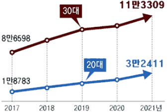


view more
Rwview
사회관계망서비스(SNS)를 중심으로 ‘저속노화 식단’ 유행이 거세다. 노년 내과
의사인 정희원 서울아산병원 교수가 지난해 초 엑스에 렌틸콩과 귀리, 현미로
만든 밥을 저속노화 식사법이라며 소개하면서 화제가 됐다. 저속노화 식단
커뮤니티에는 두 달 새 2만5천여명이 참여했다. 저속노화에 빠진 젊은 2030,
청년들의 이야기를 담았다.
밋밋한 ‘건강식’이, 친구들 사이에서 자랑 삼고 싶은 ‘힙한 습관’으로 자리
잡았어요!

저속 노화 식단을 계획한 후 그렇게 일주일 치 식재료를 딱 해치우면 스스로와의
미션을 성공한 기분이 들어요.
평소 건강에 대한 경각심을 갖고 있지 않다가 건강검진을 받고 마음이
달라졌어요.
 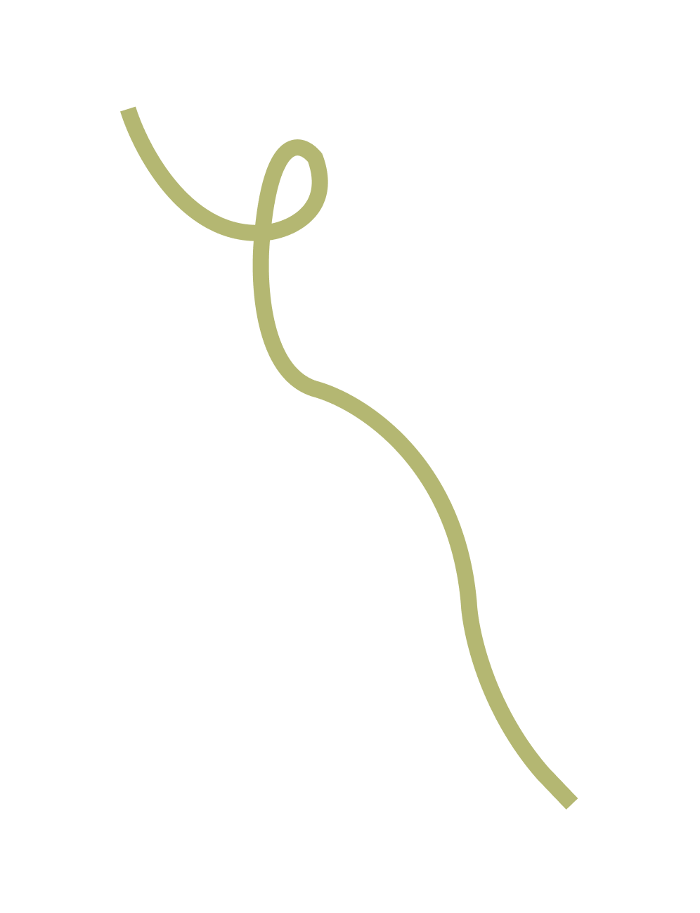
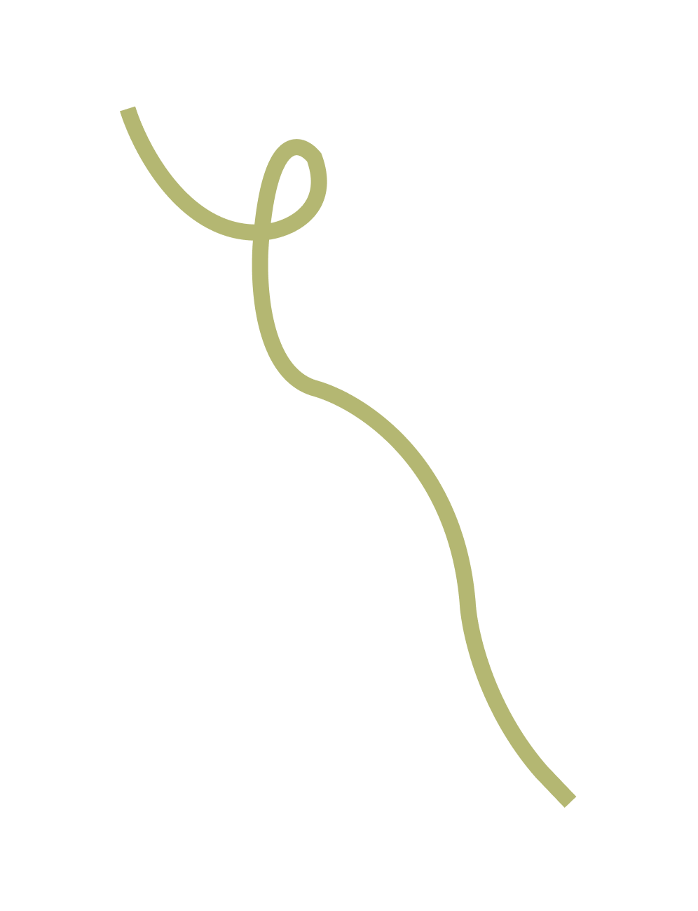
SLOW-AGING
필수적인 핵심
저속노화 식단의
저속노화 식사법
최근 젊은 층 사이에서 '저속노화 식단'이 유행하고 있다. 이는 노화
속도를 늦출 수 있는 밥상을 뜻한다. 통곡물과 채소 중심으로 구성된 건강한
식단을 구성하는 게 핵심이다. 한때 젊은 층을 중심으로 자극적인 음식이 인기를
끌었으나, 최근 들어 다소 심심한 식단이 주목받고 있다. 이 같은 현상은
'웰 에이징(Well aging)' '슬로 에이징(Slow aging)' 등
건강하고 자연스러운 나이 듦에 대한 관심이 높아지면서 나타난 현상이다.
새해에는 남들보다 뇌 늙는 속도를 4분의 1로 만드는
식사를 해보자!
정희원 교수
recently
저속노화 식단은 지나친 단순당류, 정제 곡물, 탄수화물 등 노화를 가속하는
음식의 섭취를 줄이고 렌틸콩이나 현미, 귀리 등의 잡곡을 듬뿍 넣은 밥과
녹황채소, 흰살생선 등을 고루 챙겨 먹는 것이 핵심이다.
정 교수는 건강한 식단이 수명을 최대 10년까지 연장할 수 있다고 주장했다.
사람마다 다르겠지만 제가 생각하는 올바른 아침은 혈당 스파이크(혈당이
급격하게 상승했다가 하락하는 것)가 없어야 한다는 거다.
아침에 혈당 스파이크를 만들어 놓으면 점심의 식욕도 바꿔놓고 저녁까지
나빠진다. 아침 식사에 단순당과 정제 곡물이 적게 포함돼야 한다.

첫째, 초록색 채소를 많이 넣자!
둘째, 단백질 음료를 선택하자!
셋째, 단백질을 추가하자!
저속노화 아침식사의
필수적 세 가지
We inevitably grow old, so we have to be slow-aging

 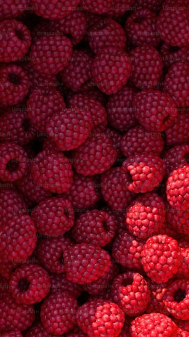
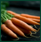
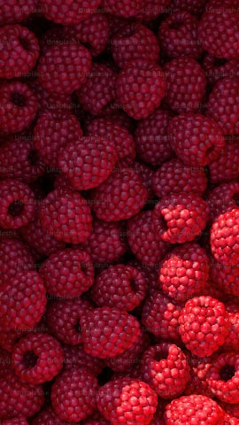
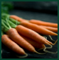


NATURE FOOD
FRUIT & FRESH
GREENISH
recently
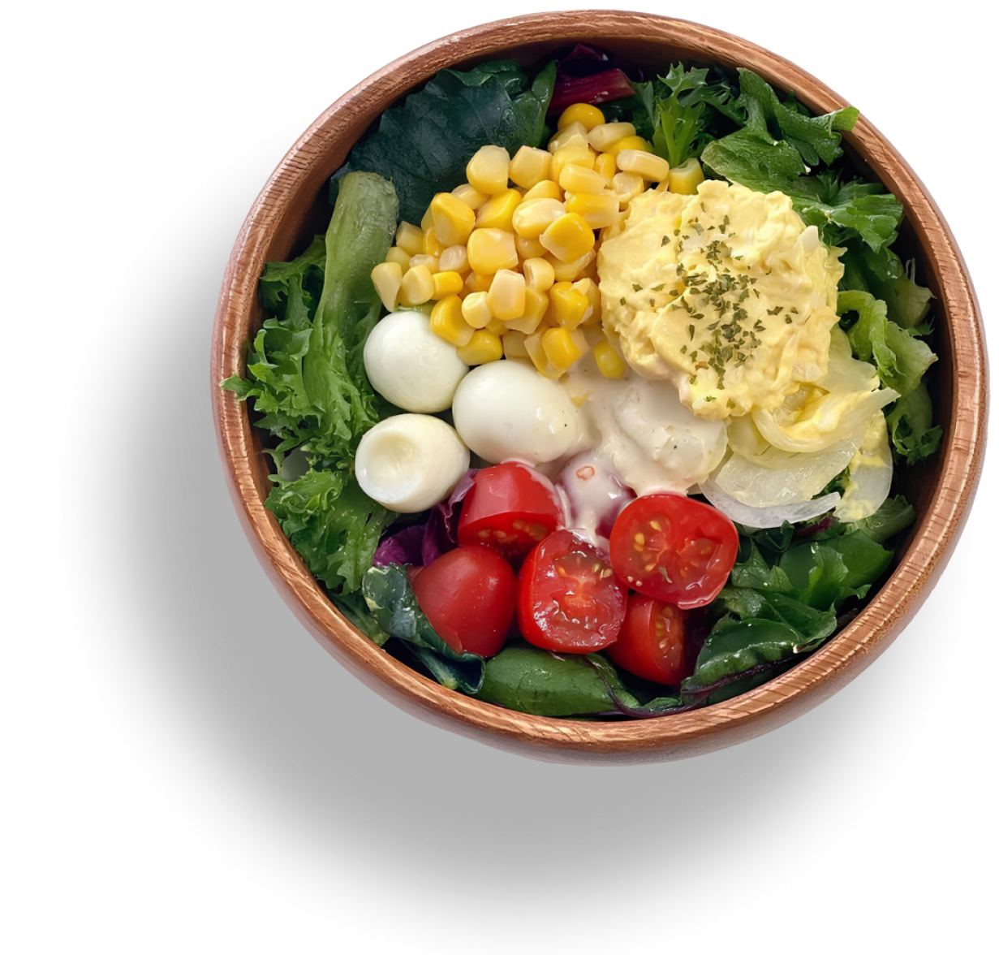
 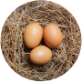
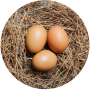
 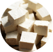
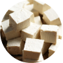
단백질과 칼슘이 풍부해 뼈 건강에 도움을
주는 영양가가 높은 음료이다.
단백질과 식이섬유가 풍부해 근육 회복과
체중 관리에 도움이 된다.
브로콜리는 항산화 물질과 비타민 C가 풍부해 면역력 증진과 노화 방지에
효과적이다.
고단백질 식품으로 근육 성장과
체력 회복에 효과적이다.
시금치는 비타민 A, C, 철분이 풍부해 면역력 강화와 혈액 건강에 도움을 준다.
두부는 단백질과 칼슘이 풍부해
근육과 뼈 건강에 좋다.
청경채는 비타민 K와 칼슘이 많아 뼈를 튼튼하게 하고, 혈액 응고를 돕는다.
단백질과 비타민 B군이 풍부해 근육 강화와 에너지 생성에 도움을 준다.
MILK AND SOY MILK
PROTEIN SMOOTHIE


 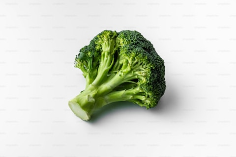
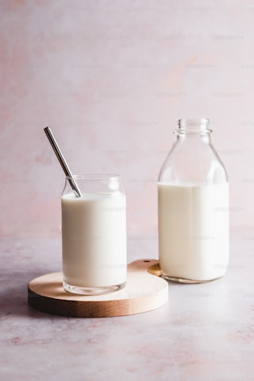
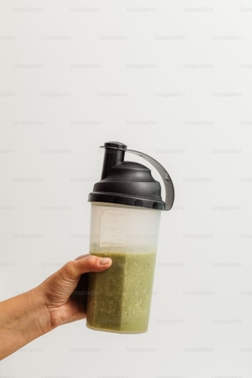
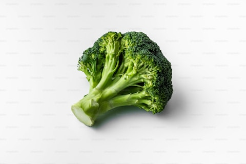
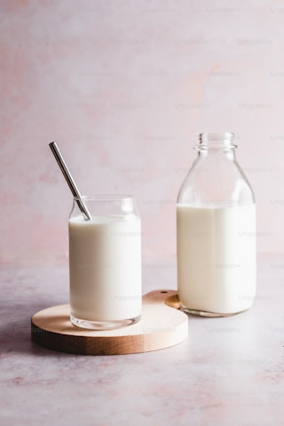
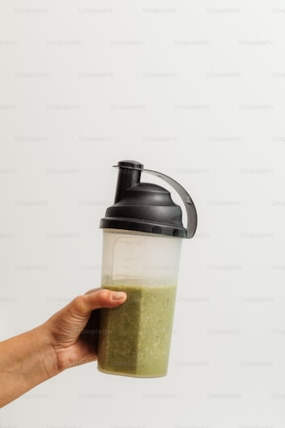